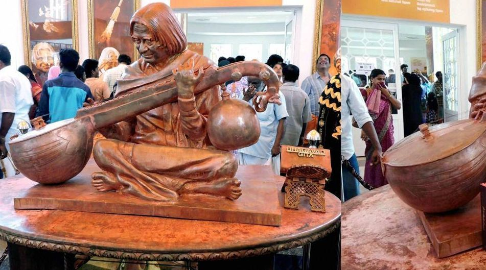

In the memory of late President Dr. A.P.J Abdul Kalam, a memorial was built on his name at Pei Karumbu, in the island town of Rameswaram, Tamil Nadu, India. On 27 July, 2017 it was inaugurated by the Prime Minister of India, Narendra Modi.
Do you know who built this memorial?. It was built by the Defence Research & Development Organisation (DRDO).
In the memorial various replica of rockets and missiles are kept which shows the work of Dr. Abdul Kalam. Also, some acrylic paintings about his life are also displayed along with hundreds of portraits that depict the life of Dr. Kalam.
At the entrance of the memorial, a statue of Dr. A.P.J. Abdul Kalam was placed showing him playing Veena a musical instrument.